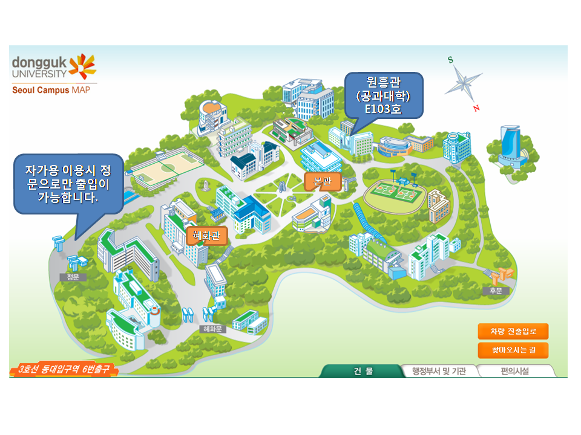

한국정보과학회 프로그래밍언어연구회/한국정보보호학회 소프트웨어보안연구회
"Secure Coding Standard" 단기강좌
|
주최: 한국정보과학회 프로그래밍언어연구회, 한국정보보호학회 소프트웨어보안연구회
일시 : 2009년 12월 17일 10:00~17:00
장소 : 동국대학교 원흥관 E103
|
|---|
프로그램 소개
컴퓨터 시스템과 네트웍의 보안 문제는 날이 갈수록
심화되고 있고, 이 문제를 해결하기 위해서 다양한 시도와 연구가 여러 분야에서 진행되고 있습니다.
최근에는 프로그램 설계와 작성 단계에서 취약성이
노출되는 것을 방지해야 근본적인 해결이 가능하다는
인식이 학계와 정부, 그리고 산업체에 확산되고 있습니다.
정부 또한 문제의 심각성을 인식하고 있으며, 여러 형태의 연구와 개발에 투자하고 있습니다. 이러한
맥락에서 정보과학회 프로그래밍언어연구회와 정보
보호학회 소프트웨어보안연구회는 시큐어 코딩 단기
강좌를 마련하였습니다.
이 강좌를 통해 기업은 프로그래밍 활동에 시큐어
코딩이 적용되어 전반적인 보안 수준이 향상되고,
대학에서는 수요를 감당할 인력 양성의 계기가 마련 되기를 바랍니다.
강좌를 통해 개인적인 발전과 아울러
사회의 현안을 해결하는 데 동참하시기를 강력히 권해
드립니다.
Secure Coding Standard 단기강좌 조직위원장 오세만
프로그램
|
09:00-09:50 | 등록 | | |
09:50-10:00 | 개회사 | | | 오전세션 |
|---|
|
10:00-11:00 | 시큐어 코딩 표준과 전자 정부 시스템 | 한근희 전문위원 (행정안전부) | |
11:00-12:00 | 시큐어 코딩 표준(Secure Coding Standard) 활용 | 최진영 교수 (고려대) | |
12:00-13:30 | 점심식사 | | | 오후세션* |
|---|
| Java 트랙 |
|---|
|
13:30-15:00 | 자바 코딩 표준 사용 사례 | 류현수 (사이버로지텍) | |
15:00-15:30 | Coffee break | | |
15:30-17:00 | Secure Coding Standard for Java | 오세만 교수 (동국대) | | C 트랙 |
|---|
|
13:30-15:00 | 고품질 SW를 위한 Coding Rule과 정적도구 활용 및 사례발표 | 김명호 책임 (LIG 넥스원) | |
15:00-15:30 | Coffee break | | |
15:30-17:00 | Secure Coding Standard for C | 표창우 교수 (홍익대) | | *오후 세션은 C 트랙과 Java 트랙 2가지로 운영됩니다.
|
|---|
|
등록안내
- 등록비: 10만원
- 등록 방법: 등록페이지를 통하여 온라인 등록 또는 현장등록 (세금계산서 발급 요청시 사업자 등록증 사본 제출)
- 제공: 교재, 주차권, 중식
조직위원회
- 위원장: 오세만 (동국대)
- 기획: 표창우 (홍익대), 최진영 (고려대)
- 재무: 이은영 (동덕여대)
- 홍보: 안준선 (항공대), 서광석 (한국정보보호교육센터)
- 간사: 손윤식 (동국대)
- 조직위원: 김익순 (ETRI), 도경구 (한양대), 박성우 (포항공대), 변석우 (경성대), 백윤흥 (서울대), 신승철 (한국기술교육대), 이광근 (서울대), 이수현 (창원대), 이욱세 (한양대), 이재진 (서울대), 조은선 (충남대), 창병모 (숙명여대), 한경숙 (산기대), 한환수 (성균관대)
- 고문: 최광무 (KAIST), 한근희 (행정안전부)
주최
- 한국정보과학회 프로그래밍언어연구회
- 한국정보보호학회 소프트웨어보안연구회
문의
- 행사전반: 오세만 (동국대), smoh@dongguk.edu, 02-2260-3342
- 등록관련: 이은영 (동덕여대),
 , 02-940-4588
, 02-940-4588
오시는길
- 대중교통: 지하철3호선 동대입구(6번 출구), 4호선 충무로(1번 출구)

- 동국대학교 내 단기강좌 장소

한국정보과학회 프로그래밍언어연구회, 한국정보보호학회 소프트웨어보안연구회